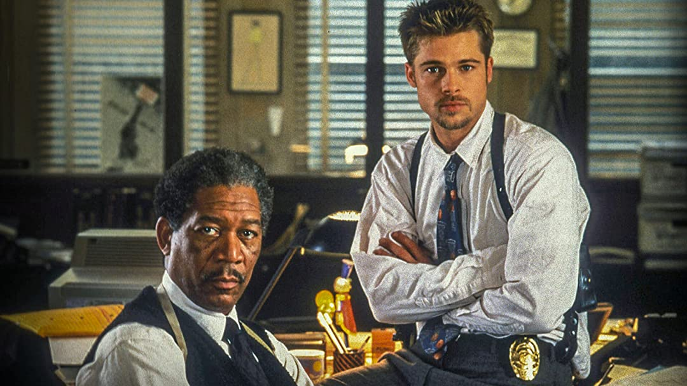

Seven (stylized as SE7EN) is a 1995 American neo-noir psychological crime thriller film directed by David Fincher and written by Andrew Kevin Walker. It stars Brad Pitt, Morgan Freeman, Gwyneth Paltrow and John C. McGinley. The film tells the story of David Mills (Pitt), a detective who partners with the retiring William Somerset (Freeman) to track down a serial killer who uses the seven deadly sins as a motif in his murders.